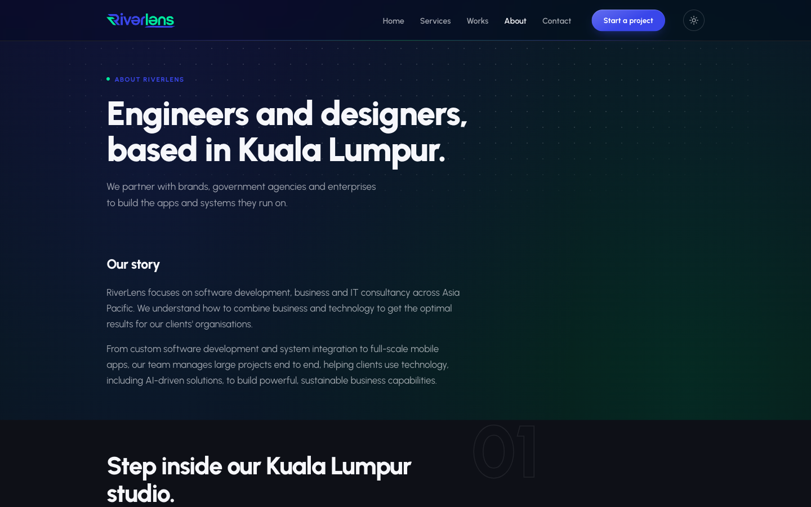
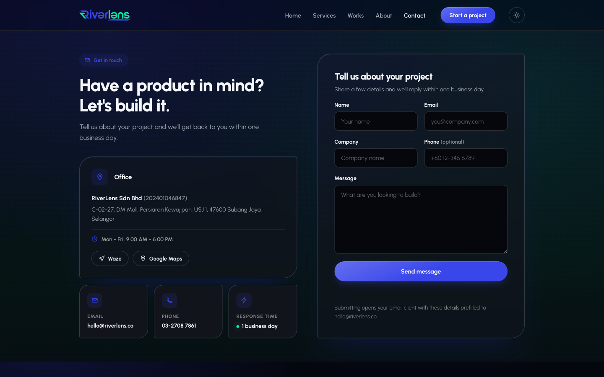
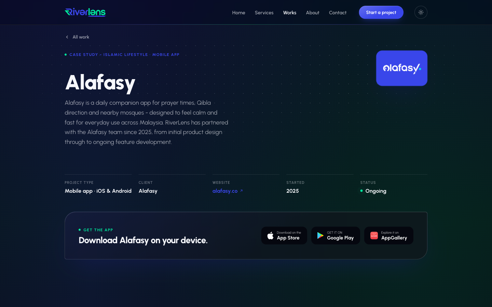
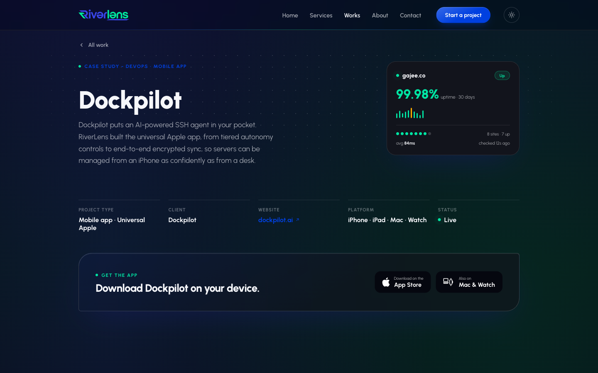
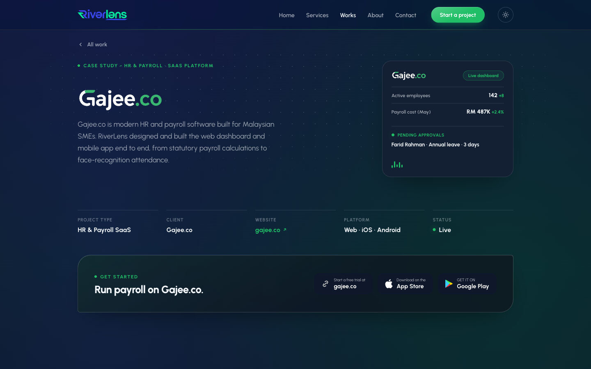
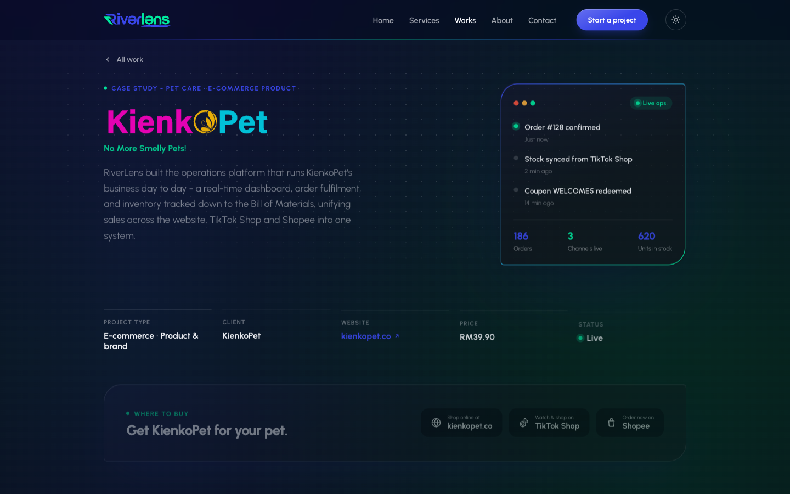
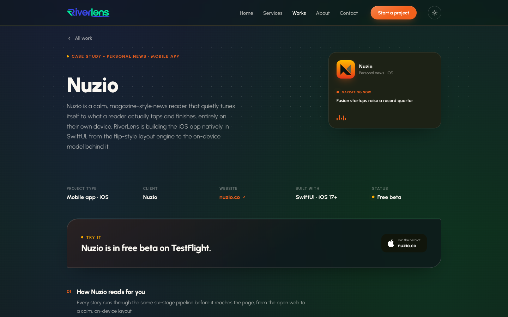
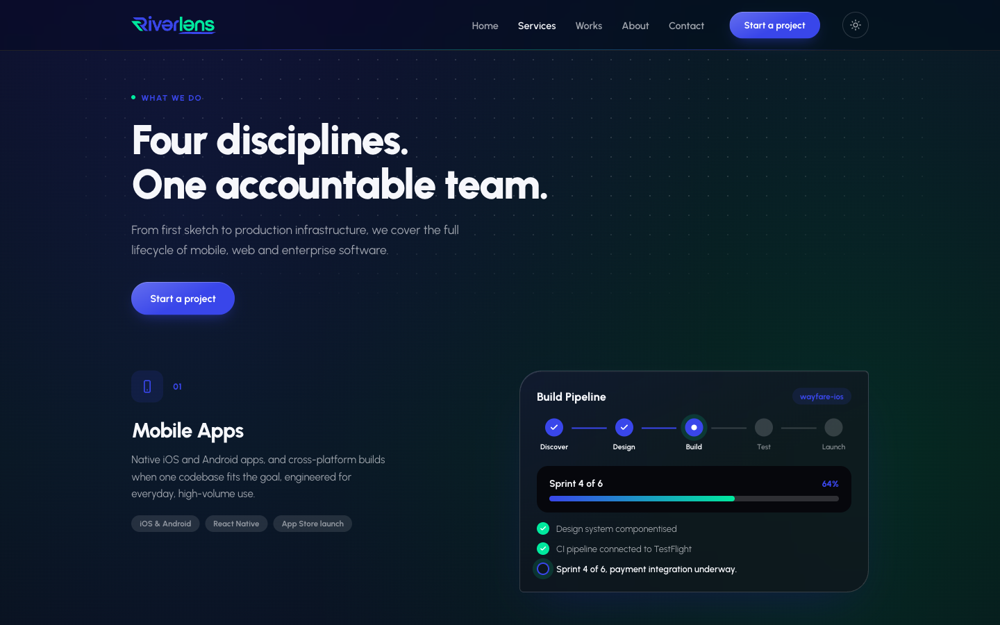

A Kuala Lumpur software house that designs, builds, and runs software for brands, agencies, and public institutions across Malaysia. I own UI/UX for the studio's own marketing site and for the client products it ships.
RiverLens ships mobile apps, web platforms, and enterprise systems for government agencies, manufacturers, and lifestyle brands, including MIDA, MATRADE, Hitachi, Panasonic, and the Royal Embassy of Saudi Arabia. My work covers the full UI/UX loop: research, wireframes, and interface design, plus keeping the studio's own site current as a live record of what's shipped.


Beyond the studio site, I design the UI for the client products RiverLens builds: Alafasy, a prayer-times companion app; Dockpilot, an AI-powered SSH agent for Mac, iPhone, and Watch; Gajee.co, HR and payroll software for Malaysian SMEs; KienkoPet, e-commerce operations for a pet-care brand; and Nuzio, a personalised news reader. Each has its own brand, but shares the same components, spacing, and dark-mode behaviour underneath.





The works page updates as new client work ships, so it stays an honest, current record instead of a handful of old screenshots. Internally, it also doubles as the reference for how the studio's own design system should look and behave across a very different set of businesses.
